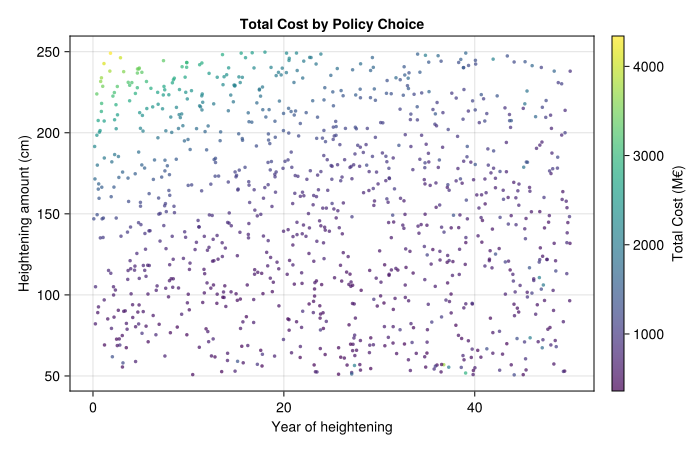
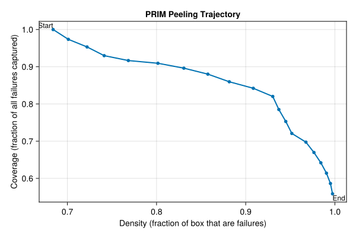
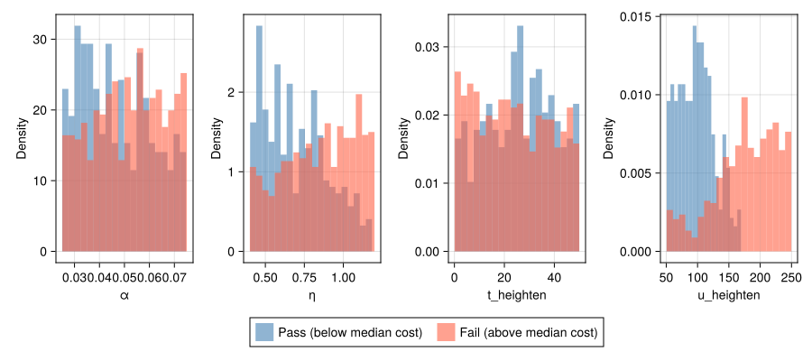

# Install SimOptDecisions if needed
if !isfile("Manifest.toml")
import Pkg
Pkg.instantiate()
end
try
using SimOptDecisions
catch
import Pkg
try
Pkg.rm("SimOptDecisions")
catch
end
Pkg.add(; url="https://github.com/dossgollin-lab/SimOptDecisions")
Pkg.instantiate()
using SimOptDecisions
endLab 8: Scenario Discovery
CEVE 421/521
1 Overview
In this lab you’ll use scenario discovery for policy design — asking not just “when does a fixed policy fail?” but “what combinations of uncertainty and policy choice drive high costs?” You’ll work with the Eijgenraam dike heightening model, which extends van Dantzig (1956) to consider time dependence in a cost-benefit framework for setting flood protection standards in the Netherlands (Eijgenraam et al., 2014). You’ll jointly sample uncertain climate parameters and policy levers, label each (uncertainty, policy) pair by whether total cost exceeds a threshold, and use PRIM (Patient Rule Induction Method) to find which combinations drive expensive outcomes (Friedman & Fisher, 1999).
2 Before Lab
Complete these steps BEFORE coming to lab:
Accept the GitHub Classroom assignment (link on Canvas)
Clone your repository:
git clone https://github.com/CEVE-421-521/lab-08-S26-yourusername.git cd lab-08-S26-yourusernameOpen the notebook in VS Code or Quarto preview
Run the first code cell — it will install any missing packages (may take 10-15 minutes the first time)
Submission: You will render this notebook to PDF and submit the PDF to Canvas. See Section 6 for details.
2.1 Setup
Run the cells in this section to load packages, the model, and generate the ensemble. You don’t need to modify any of this code — just run it and read the comments.
We use SimOptDecisions as before
We also use regular packages
using CairoMakie
using DataFrames
using Distributions
using Random
using StatisticsLast, we implement PRIM and the case study in separate files
include("eijgenraam.jl")
include("prim.jl")
Random.seed!(2026)2.2 The Eijgenraam Dike Model
The Eijgenraam model (Eijgenraam et al., 2014) computes the total societal cost of flood protection for a dike ring in the Netherlands. It balances two competing forces:
- Investment cost: building the dike higher is expensive, and costs grow exponentially with height
- Expected flood losses: without protection, losses grow over time due to sea level rise and economic growth
The annual flood probability at year \(t\) is:
\[ P(t) = P_0 \exp\bigl(\alpha \eta\, t - \alpha\, H(t)\bigr) \]
where \(P_0\) is the initial flood probability, \(\alpha\) controls how sensitive flood probability is to water level, \(\eta\) is the rate of water level rise, and \(H(t)\) is the cumulative dike heightening at time \(t\).
Notice that \(\alpha\) appears twice: it makes flood probability grow faster with rising water (\(\alpha \eta t\)), but it also makes each cm of dike height more effective (\(-\alpha H\)). This means \(\alpha\)’s effect on failure is non-monotonic — something scenario discovery can reveal.
2.3 Policy: When and How Much to Heighten
Our policy has two levers:
- When to heighten the dike (\(t_h\) years from now)
- How much to heighten it (\(u\) cm)
There’s a genuine tradeoff: deferring the investment saves money (discounting), but the dike ring is unprotected while we wait.
2.4 Sampling Design
For this analysis we fix three parameters at calibrated Ring 15 values and jointly sample two climate uncertainties and two policy levers.
Fixed (calibrated):
- \(P_0 = 1/2000\) — the current legal safety standard, used as the nominal initial flood probability
- \(V_0 = 15{,}000\) M€ — approximate economic value at risk for Ring 15
- \(\delta = 0.04\) — discount rate
Jointly sampled:
| Variable | Role | Range |
|---|---|---|
| \(\alpha\) | sensitivity of flood prob. to water level | [0.025, 0.075] |
| \(\eta\) | sea level rise rate (cm/year) | [0.4, 1.2] |
| \(t_\text{heighten}\) | year of dike heightening | [0, 50] |
| \(u_\text{heighten}\) | amount of heightening (cm) | [50, 250] |
Each of the 1,000 runs pairs one randomly drawn uncertainty realization with one randomly drawn policy. PRIM will then search this joint space for conditions — combining climate and policy — that drive high total cost.
config = EijgenraamConfig() # ring 15 structural defaults -- see eijgenraam.jl
# Fixed calibrated parameters
P0_fixed = 1 / 2000
V0_fixed = 15_000.0
delta_fixed = 0.04
n_scenarios = 1000
scenarios = map(1:n_scenarios) do _
EijgenraamScenario(;
P0=P0_fixed,
alpha=rand(Uniform(0.025, 0.075)),
eta=rand(Uniform(0.4, 1.2)),
V0=V0_fixed,
delta=delta_fixed,
)
end
policies = map(1:n_scenarios) do _
EijgenraamPolicy(;
t_heighten=rand(Uniform(0.0, 50.0)),
u_heighten=rand(Uniform(50.0, 250.0)),
)
end3 Exploratory Modeling
3.1 Run the Ensemble
We run each (uncertainty, policy) pair through the model individually and collect the outcomes.
results_vec = map(1:n_scenarios) do i
r = explore(config, scenarios[i:i], [policies[i]])
(
total_cost=Array(r.total_cost)[1, 1],
total_investment=Array(r.total_investment)[1, 1],
total_loss=Array(r.total_loss)[1, 1],
max_failure_prob=Array(r.max_failure_prob)[1, 1],
)
end
total_costs = [r.total_cost for r in results_vec]
total_investments = [r.total_investment for r in results_vec]
total_losses = [r.total_loss for r in results_vec]3.2 Policy-Cost Landscape
The scatter plot below shows total cost for each run in policy space. Each point is one (uncertainty, policy) pair — the scatter around any policy reflects variation due to the sampled climate parameters.
let
t_h_vals = [SimOptDecisions.value(p.t_heighten) for p in policies]
u_vals = [SimOptDecisions.value(p.u_heighten) for p in policies]
fig = Figure(; size=(700, 450))
ax = Axis(
fig[1, 1];
xlabel="Year of heightening",
ylabel="Heightening amount (cm)",
title="Total Cost by Policy Choice",
)
sc = scatter!(ax, t_h_vals, u_vals; color=total_costs, colormap=:viridis, markersize=5, alpha=0.7)
Colorbar(fig[1, 2], sc; label="Total Cost (M€)")
fig
end
4 Scenario Discovery
Now we ask: under what joint conditions of climate and policy does total cost become unacceptably high?
4.1 Cost Budget
Rather than an arbitrary statistical threshold, we set a cost budget from an approximate analysis. We run the benchmark policy — heighten 100 cm immediately — under a reference scenario with climate parameters at the midpoints of their ranges. Any (scenario, policy) pair that exceeds this benchmark cost is labeled a failure.
ref_scenario = EijgenraamScenario(;
P0=P0_fixed,
alpha=0.05, # midpoint of [0.025, 0.075]
eta=0.8, # midpoint of [0.4, 1.2]
V0=V0_fixed,
delta=delta_fixed,
)
benchmark_policy = EijgenraamPolicy(; t_heighten=0.0, u_heighten=100.0)
ref_result = explore(config, [ref_scenario], [benchmark_policy])
cost_budget = Array(ref_result.total_cost)[1, 1]
println("Cost budget: $(round(cost_budget; digits=0)) M€ (benchmark policy under reference scenario)")Cost budget: 672.0 M€ (benchmark policy under reference scenario)This budget reflects a specific value judgment: a reasonable policy under typical conditions. A stricter budget would label more runs as failures; a looser one fewer. The choice shapes which conditions PRIM finds — we’ll return to this below.
4.2 Failure Criterion
# Your code here4.3 Outcome Classification
failures = total_costs .> cost_budget
n_fail = sum(failures)
println("$(n_fail) of $(n_scenarios) runs exceed the budget ($(round(100 * n_fail / n_scenarios; digits=1))%)")684 of 1000 runs exceed the budget (68.4%)4.4 Input Matrix
To run PRIM, we need the sampled inputs as a plain matrix. Each row is one (uncertainty, policy) pair; each column is one input. We include both climate uncertainties and policy levers — PRIM will search across all of them.
param_names = ["α", "η", "t_heighten", "u_heighten"]
X = hcat(
[SimOptDecisions.value(s.alpha) for s in scenarios],
[SimOptDecisions.value(s.eta) for s in scenarios],
[SimOptDecisions.value(p.t_heighten) for p in policies],
[SimOptDecisions.value(p.u_heighten) for p in policies],
)4.5 PRIM Analysis
PRIM peels away slices of the input space to find a “box” where failures concentrate. It traces a path from high coverage (large box, catches most failures) to high density (small box, almost all scenarios in the box are failures).
trajectory = prim_peel(X, failures)
prim_summary(trajectory, param_names)Step | Coverage | Density | Support | Restricted dimensions
-----|----------|---------|---------|----------------------
1 | 100.0% | 68.4% | 1000 | (full space)
2 | 97.4% | 70.1% | 950 | u_heighten ≥ 61.412
3 | 95.3% | 72.2% | 903 | u_heighten ≥ 70.2828
4 | 93.0% | 74.1% | 858 | u_heighten ≥ 80.3508
5 | 91.7% | 76.8% | 816 | u_heighten ≥ 90.4008
6 | 90.9% | 80.2% | 776 | u_heighten ≥ 98.5278
7 | 89.6% | 83.1% | 738 | u_heighten ≥ 105.9284
8 | 88.0% | 85.8% | 702 | u_heighten ≥ 112.6945
9 | 86.0% | 88.2% | 667 | u_heighten ≥ 118.2585
10 | 84.2% | 90.9% | 634 | u_heighten ≥ 123.8134
11 | 82.0% | 93.0% | 603 | u_heighten ≥ 132.2375
12 | 78.5% | 93.7% | 573 | t_heighten ≤ 47.0415, u_heighten ≥ 132.2375
13 | 75.3% | 94.5% | 545 | t_heighten ≤ 43.8171, u_heighten ≥ 132.2375
14 | 72.1% | 95.2% | 518 | t_heighten ≤ 43.8171, u_heighten ≥ 138.6029
15 | 69.7% | 96.8% | 493 | t_heighten ≤ 43.8171, u_heighten ≥ 142.9466
16 | 67.0% | 97.7% | 469 | t_heighten ≤ 43.8171, u_heighten ≥ 148.1629
17 | 64.2% | 98.4% | 446 | t_heighten ≤ 43.8171, u_heighten ≥ 154.0102
18 | 61.4% | 99.1% | 424 | t_heighten ≤ 43.8171, u_heighten ≥ 159.5594
19 | 58.6% | 99.5% | 403 | t_heighten ≤ 43.8171, u_heighten ≥ 164.3972
20 | 55.8% | 99.7% | 383 | η ≥ 0.4516, t_heighten ≤ 43.8171, u_heighten ≥ 164.3972let
coverages = [b.coverage for b in trajectory]
densities = [b.density for b in trajectory]
fig = Figure(; size=(600, 400))
ax = Axis(
fig[1, 1];
xlabel="Density (fraction of box that are failures)",
ylabel="Coverage (fraction of all failures captured)",
title="PRIM Peeling Trajectory",
)
scatterlines!(ax, densities, coverages; markersize=8, linewidth=2)
# Label first and last
text!(ax, densities[1], coverages[1]; text="Start", align=(:right, :bottom), fontsize=12)
text!(
ax,
densities[end],
coverages[end];
text="End",
align=(:left, :top),
fontsize=12,
)
fig
end
4.6 Box Selection
Pick a box from the trajectory that you think gives a good balance of coverage and density. A good starting point is a box with density above 70% and coverage above 50%.
# Find a box with density > 0.7 (or the last box if none qualify)
good_idx = findfirst(b -> b.density > 0.7, trajectory)
if good_idx === nothing
good_idx = length(trajectory)
end
box = trajectory[good_idx]
println("Selected box $(good_idx):")
println(" Coverage: $(round(100 * box.coverage; digits=1))%")
println(" Density: $(round(100 * box.density; digits=1))%")
println(" Support: $(box.support) scenarios")
println()
initial = trajectory[1]
for (j, name) in enumerate(param_names)
lo_changed = box.lower[j] > initial.lower[j]
hi_changed = box.upper[j] < initial.upper[j]
if lo_changed || hi_changed
println(" $name: [$(round(box.lower[j]; sigdigits=3)), $(round(box.upper[j]; sigdigits=3))]")
end
endSelected box 2:
Coverage: 97.4%
Density: 70.1%
Support: 950 scenarios
u_heighten: [61.4, 250.0]4.7 Input Distributions by Outcome
Now that PRIM has identified a box, let’s look directly at the input distributions of passing and failing runs. The histograms below show each sampled variable split by outcome — blue for passing runs, red for failing ones.
let
pass_mask = .!failures
fail_mask = failures
fig = Figure(; size=(900, 400))
positions = [(1, 1), (1, 2), (1, 3), (1, 4)]
for (j, (name, pos)) in enumerate(zip(param_names, positions))
row, col = pos
ax = Axis(fig[row, col]; xlabel=name, ylabel="Density")
hist!(ax, X[pass_mask, j]; bins=20, normalization=:pdf, color=(:steelblue, 0.6))
hist!(ax, X[fail_mask, j]; bins=20, normalization=:pdf, color=(:tomato, 0.6))
end
Legend(
fig[2, 1:4],
[PolyElement(; color=(:steelblue, 0.6)), PolyElement(; color=(:tomato, 0.6))],
["Pass (below median cost)", "Fail (above median cost)"];
orientation=:horizontal,
tellwidth=false,
)
fig
end
4.8 Visualization
# Your code here5 Key Takeaways
Key takeaways:
- Scenario discovery for policy design: by jointly sampling uncertainties and policy levers, PRIM reveals which combinations drive unacceptable outcomes — not just which conditions, but which decisions under which conditions.
- PRIM finds interpretable boxes: “cost is high when \(\eta > X\) AND \(u_\text{heighten} < Y\)” is a concrete, actionable statement that connects climate risk to policy choice.
- Both levers and uncertainties matter: PRIM searches the joint space — it can tell you that the policy you control is as important a driver of failure as the uncertainty you can’t control.
- The structure is visible in the data: PRIM’s box reflects real patterns — the same separation shows up in a scatter plot of raw runs, and is worth examining directly.
6 Submission
Write your answers in the response boxes above.
Render to PDF:
- In VS Code: Open the command palette (
Cmd+Shift+P/Ctrl+Shift+P) → “Quarto: Render Document” → select Typst PDF - Or from the terminal:
quarto render index.qmd --to typst
- In VS Code: Open the command palette (
Submit the PDF to the Lab 8 assignment on Canvas.
Push your code to GitHub (for backup):
git add -A && git commit -m "Lab 8 complete" && git push
Checklist
Before submitting:
References
van Dantzig, D. (1956). Economic Decision Problems for Flood Prevention. Econometrica, 24(3), 276–287. https://doi.org/10.2307/1911632
Eijgenraam, C., Kind, J., Bak, C., Brekelmans, R., Hertog, D. den, Duits, M., et al. (2014). Economically efficient standards to protect the Netherlands against flooding. Interfaces, 44(1), 7–21. https://doi.org/10.1287/inte.2013.0721
Friedman, J. H., & Fisher, N. I. (1999). Bump hunting in high-dimensional data. Statistics and Computing, 9(2), 123–143. https://doi.org/10.1023/A:1008894516817